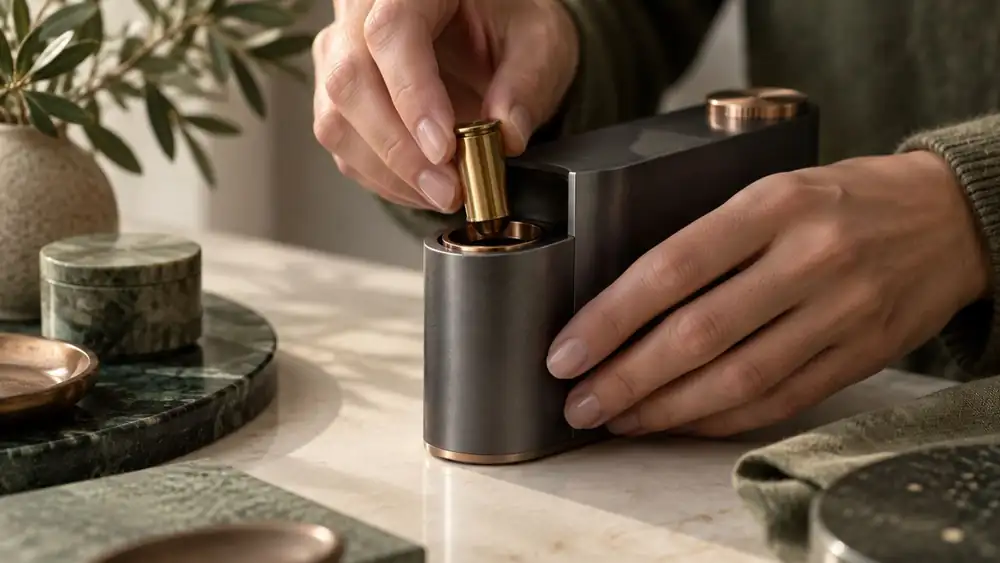

Занятие 7 · онлайн-поток 3 · 14 ноября 2026
Навыки в Codex
и Дипресёрч
Страница уходит в интернет.
Агент получает регламенты и исследователя.
Страница уходит в интернет.
Агент получает регламенты и исследователя.
На занятии 5 вы поставили Codex и собрали первую страницу. Сегодня возвращаемся в него и даём агенту три вещи.
Codex, первая страница, визуал и NotebookLM.
Ссылка на вашу страницу, свои и готовые навыки, Дипресёрч.
У страницы адрес в интернете, у агента свой исследователь.
страница уходит в интернет
20 минот промпта к плагину
10 минпишем свои
30 минставим набор
15 минAPI и MCP
7 миннавык и двенадцать сервисов
45 минИтог и что дома
3 минПриложение ChatGPT, слева Codex, папка workspace.
Без него не откроются GitHub и часть сервисов.
Есть: войдите в браузере. Нет: заводите сейчас, github.com.
В браузере на компьютере: просьбы копируются из неё в Codex.
 Codex1GITHUB
Codex1GITHUBОдна просьба Codex,
и у вашей визитки есть ссылка.
Визитка живёт у вас на компьютере. Открыть её можете только вы.
У страницы есть ссылка. Она открывается с любого телефона, её можно отправить клиенту.
Хранит вашу папку и каждую её версию. Сломали, вернулись к прошлой.
Сломался ноутбук, проект остался.
GitHub Pages показывает папку как сайт по ссылке. Бесплатно.
Страница и её код открыты всему интернету. Личное не выкладываем.
github.com, бесплатно, по почте
одна, в новый чат Codex
одноразовый, вводите в браузере сами
на список файлов
открывается с телефона
Codex покажет одноразовый код и адрес. Открываете адрес, вводите код, нажимаете Authorize. Пароль ему не даёте.
Первые одну-три минуты это нормально: сайт собирается. Скажите «проверь ещё раз через минуту».
Проверьте с телефона. Не открылась: так GitHub иногда придерживает новые аккаунты. Напишите в чат группы, разберём после урока.
Codex поставит сам. Не смог: назовёт одно действие, которое сделать вам.
Та же просьба: он сначала соберёт простую визитку и выложит её.
Уходит одна папка. Список файлов он покажет до отправки и ждёт вашего «да». Что выложили, остаётся в прошлых версиях.
Четыре слова,
которые все путают.
Разовая просьба, «что хочу». Живёт в одном запросе, каждый раз объясняете заново.
Регламент одной операции, «как делать». Доступа ни к чему не даёт.
Пропуск к программе: почта, диск, календарь. Даёт руки, но не «как».
Стартовый набор отдела одним пакетом. Внутри могут быть навыки, коннекторы, команды.
Клиент пишет: «Сколько стоит шкаф 2,4 метра и когда сможете поставить?»
| Что дали агенту | Что происходит с заявкой |
|---|---|
| Только промпт | Вы сами копируете письмо в чат и каждый раз объясняете, как отвечать. |
| Плюс навык | Агент знает ваш регламент ответа и прайс. Письмо всё ещё приносите вы. |
| Плюс коннектор | Агент сам видит письмо в почте и готовит ответ по регламенту. |
| Плагин | Навыки и коннекторы целого отдела ставятся одной кнопкой. |
На занятии 4 вы ставили навыки в режиме «Работа» и звали их через @.
В меню ChatGPT они стояли в разделе «Плагины». По сути это коннекторы: пропуск к программе.
На занятии 5 поставили его в Codex. Это плагин из одних навыков.
Пишем свои навыки в Codex и ставим готовые. Здесь агент включает их сам.
Codex3НАВЫКЗаписали один раз.
Агент берёт его сам.
SKILL.md: обычный текст. Его можно открыть и прочитать глазами.
По описанию агент решает, когда брать навык. Поэтому в описании ваши обычные фразы.
Полный текст он читает, когда решил применить. Десять навыков не забивают ему память.
По описанию: описали словами, что навык должен делать.
Из сделанной задачи: результат понравился, «преврати это в навык».
Через интервью: skill-creator задаёт вопросы по одному.
Запись с экрана: делаете руками и проговариваете голосом.
Готовый навык: найти, досмотреть, поставить.
Правка становится правилом: дописать её в навык одной фразой.
Пишете $skill-creator и свою задачу. Агент задаёт вопросы по одному и собирает навык из ответов. Отвечать можно голосом.
«Плагины» → раздел навыков → «Добавить» → запись навыка. Делаете задачу руками и проговариваете, агент собирает навык.
Задачу легко описать словами: интервью. Проще показать руками: запись. Промпты обоих в библиотеке.
Свои навыки: папка .agents/skills внутри workspace. Дипресёрч ставится в личную папку и виден во всех папках.
Агент берёт навык, когда задача совпала с описанием. Не взял: в описании нет ваших слов.
В Codex наберите $ и начало имени навыка. В чате ChatGPT навыки звали через @.
Codex4ГОТОВЫЕ НАВЫКИНе всё писать самому.
Ставим проверенный набор.
Общий каталог навыков. Навык find-skills сам ищет в нём подходящие под вашу задачу.
Документы, таблицы, презентации, PDF, тексты и посты. Ставятся одной командой, её вводит Codex.
Продажи, финансы, договоры, найм, ответы клиентам.

Codex · перезапускЗакройте Codex полностью и откройте снова: навыки подхватываются при старте.
Нет Node.js. Скажите: «Поставь мне Node.js версии LTS сам». Не смог: nodejs.org, кнопка LTS.
Разрешайте команду npx skills add: мы её проверили. На другие команды читайте, что он просит.
Он назовёт его отдельно и объяснит. Остальные работают, идём дальше.
Стартовый набор отдела одним пакетом. Внутри могут быть навыки, коннекторы, команды.
Superpowers: плагин из одних навыков.
Раздел «Плагины» в Codex и магазины. Адреса в шпаргалке.
Поставить один плагин из магазина и позвать его навык.
Два слова, без которых
непонятно, зачем ключи.
Это программа: почта, карты, поисковый сервис.
Сайт и кнопки. Для людей: зашли, сели, заказали.
Для программ и агентов. Открывается ключом. Ключ получает человек, один раз.
Общий стандарт пропусков: с ним агент одинаково заходит в служебные входы разных заведений.
Сайт с кнопками: вы входите по логину и паролю и нажимаете сами.
Это API. Открывается ключом: длинной строкой, которую сервис выдаёт после регистрации. Ключ это как ключ от квартиры.
Чтобы агент пользовался сервисом, ему нужен пропуск. MCP это общий стандарт пропусков, один на всех агентов.
Почта, диск, календарь, поисковики: всё подключается одинаково.
Сервис пускает только по ключу: ключ API в настройках этого пропуска.
Context7, Sequential Thinking, Playwright с занятия 5 подключены по MCP.
| Понятие | Что это | Пример у вас |
|---|---|---|
| Агент | Новый сотрудник. | Codex |
| AGENTS.md | Правила компании и «кто я», читаются всегда. | AGENTS.md в корне вашего окружения |
| Промпт | Разовая просьба, «что хочу». Живёт в одном запросе, каждый раз объясняете заново. | «Сделай протокол этой встречи» |
| Навык | Регламент одной операции, «как делать». Доступа ни к чему не даёт. | Как разбирать договор |
| Коннектор | Пропуск к программе (почта, диск, календарь). Даёт «руки», но не «как». Внутри это MCP. | Gmail, Google Диск, Google Календарь. На карточке плагина подписан «Приложение» |
| MCP | Общий стандарт таких пропусков, один на всех агентов. | Context7, Sequential Thinking и Playwright из мастер-промпта |
| API | Служебный вход программы, открывается ключом. | Ключ Tavily в КЛЮЧИ.txt |
| Плагин | Стартовый набор отдела одним пакетом. Внутри могут быть навыки, коннекторы, команды. | Superpowers: набор навыков, его поставил мастер-промпт |
Codex6ДИПРЕСЁРЧОдин навык и двенадцать сервисов.
Шесть сразу, шесть по ключу API.
порядок исследования
работают сразу
бесплатно на старте
запускает и собирает
в вашей папке
| В чате ChatGPT | Дипресёрч в Codex | |
|---|---|---|
| Где живёт | В браузере | На вашем компьютере |
| Что умеет | Отчёт на решение за 5–30 минут | Соцсети, карты, маркетплейсы, отзывы, сайты целиком |
| Лимит | Счётчик исследований в подписке | Лимит Codex плюс бесплатные квоты сервисов |
| Где отчёт | В чате, скачать в Word или PDF | Файлом в вашей папке |
навык одной просьбой
один под все ключи
друг за дружкой
«возьми ключи и подключи»
перезапуск, все двенадцать
| Сервис | Где завести ключ | Бесплатно |
|---|---|---|
| Tavily | app.tavily.com | 1000 запросов в месяц |
| Firecrawl | firecrawl.dev/app/api-keys | 1000 страниц в месяц |
| Exa | dashboard.exa.ai/api-keys | 20 $ на старте и 10 $ каждый месяц |
| Apify | console.apify.com/settings/integrations | 5 $ в месяц |
| Jina | jina.ai/api-dashboard | 10 млн токенов на ключ |
| Bright Data | brightdata.com/ai/mcp-server | 5000 запросов в месяц, первые три месяца |
Codex · перезапуск| Знак | Что делает |
|---|---|
| $ доллар | Это навык. Всегда $имя: $deep-research. Наберите $, и он подскажет список. |
| @ собачка | В Codex это не про навыки: собачка подставляет файл из папки или коннектор. |
| / слэш | /skills показывает список того, что стоит. /deep-research не работает: слэшем навык не позвать. |
Перезапустите Codex полностью.
Поставьте Node.js, кнопка LTS.
Почти всегда VPN.
Просьба «Почини сервис»: удалит и добавит заново.
Попросите проверить путь к SKILL.md.
Вставьте просьбу заново целиком.
Страница открывается по ссылке с телефона.
Промпт, навык, коннектор, плагин.
По описанию и из своей задачи.
Набор из 14 навыков.
Служебный вход и стандарт пропусков.
Свой исследователь в Codex.
Только в КЛЮЧИ.txt на рабочем столе. Не в чат, не в папку окружения, не на скриншоты.
На GitHub Pages уходит одна папка со страницей. Остальное окружение не выкладываем.
Навык из интернета сначала досматриваем: что делает и куда ходит.
Данные компании и клиентов в запросы не вставляем. Ищем то, что и так открыто.
Дособрать те, что не успели, и повторить шаг 4 блока 6.
Подходы 3 и 4 и три навыка из своей рутины.
Поставить один из магазина и позвать его навык.
Практика на неделю придёт в чат группы.